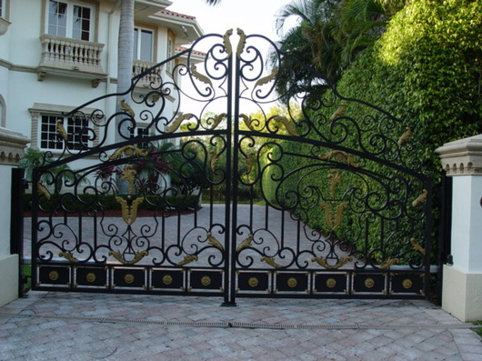

Rolling Gate - Installation, Repair and Maintenance
Rolling Gate - Installation, Repair and Maintenance
Ornamental Design by NJ Gates Call Now 1-800-576-5919

NJ GATES Carries
Large selection of Wrought Iron and Aluminum Work, browse thru our selection of Gate Operators, Sliding Gate Openers, Swing Gate Operators, Although there is a large selection of Ornamental Design we can manufacture any in aluminium but can also be made in Wrought Iron for quote send e-mail.
From simple
Decorative Design to very elaborate Gate Designs we have the Fence or Gate Design you want. Wrought Iron & Aluminium Custom Exotic Driveway Gates.
New Jersey Gates repair , Rolling Gate repair storefront gate fin NJ gates repair install gate , gate operator , gate service , lubrication gates. roll up gate roll down gates new jersey gate 24/7 , 24 hour gate services